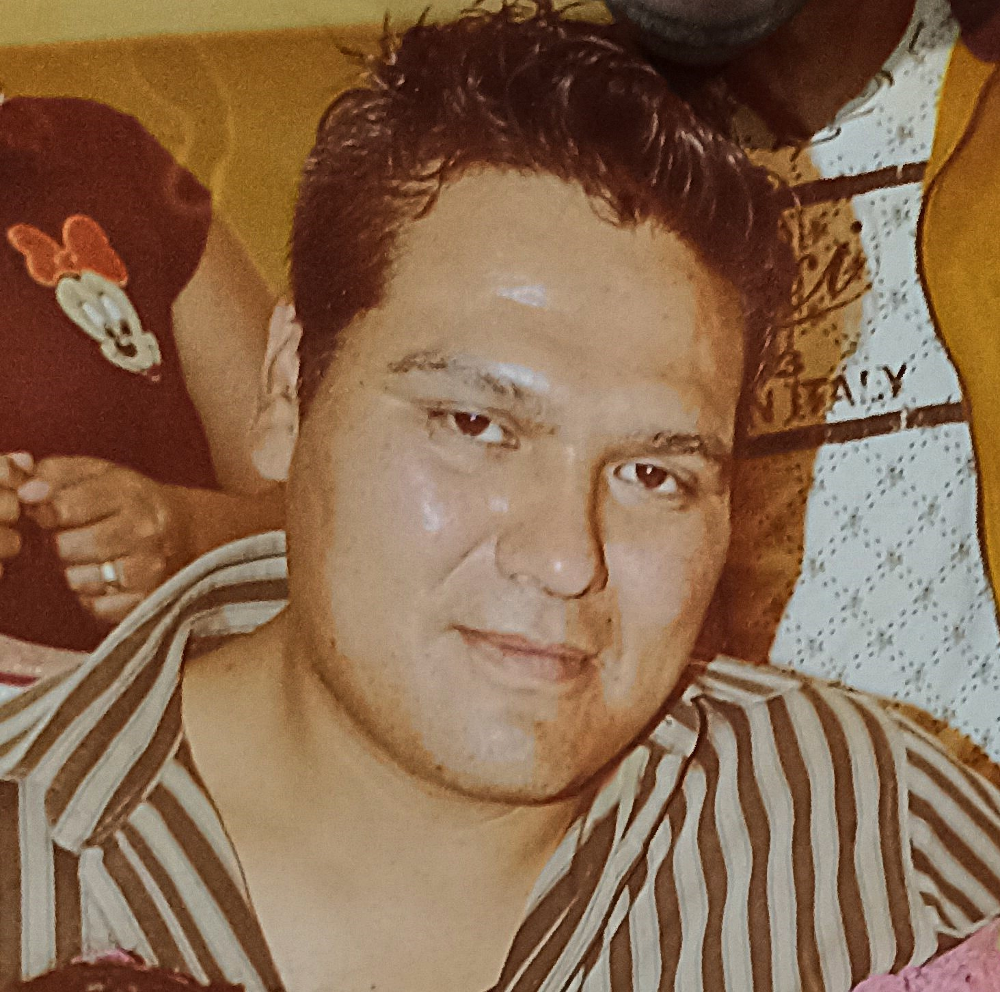

Familia de Ricardo.

Hola primo soy Ricardo Macias hijo de Aurelia Deluna Nací en el año del 83 y como dices yo nací en la vecindad el que dormía en el cuarto era yo ahí tuve mis primeros pasos y tengo muy bagos recuerdos ya que ala edad de 3 años nos cambiamos de casa bueno de vecindad ala mora de ahí si tengo recuerdos y muchos porque al igual que ustedes me encantaba ir con mi abuelita Benita ya que yo sólo conocí a una sóla Era la única que yo tenía recuerdo que ella era muy buena porque nos daba de comer siempre y en su casa nunca faltaba el mole y las suegras que asian los primos todos éramos hermanos y combinamos todos juntos que buenos tiempos recuerdo que todos jugabamos pero cada quien según la edad los mayores al básquet afuera de la casa tenían un aro para jugar otros jugando ala lotería al caico serpientes y escaleras ala pirinola y todos apostamos hasta un peso que aveces Era lo único que traías pero era muy bonito juntarnos cada domingo hasta la madrugada mi abuelita nos enseñó a jugar y convivir entre nosotros ya que ella también jugaba bueno era como un casino familiar y nos daba mucho gusto encontrarnos ahí cada semana también recuerdo cómo nos bañaba cuando llegábamos todos mugrosos de la laguna o de el río bueno con tu respectivo chanclaso todos nos bañamos juntos en unas tinas que tenía pero Era Muy bonito todo y éramos felices sin pensar que un día diosito nos envidiaria y nos isiera crecer y tomar rumbos distintos pero nunca olvidar quienes somos de dónde venimos dela familia más hermosa que existe en la tierra los quiero mucho a todos y a todas gracias por ser mi familia saludos por hoy es todo y les voy a seguir escribiendo recuerdos que viví para que nunca olviden que su primo hermano si los recuerda.a y saludos a todos mis tíos y tías que ya senos adelantaron los amo mucho.